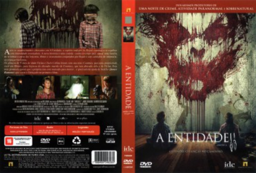

A Entidade II (2015)


Cuidado. Crianças no caminho.

Avaliação (TMDb):


5.8/10 (1.6K votos)
Avaliação (Usuário):
Outro Título:Sinister 2
País:Canada, 97 minutos
Idiomas falados:Inglês, Português
Gênero(s):Terror
Diretor(s):Ciarán Foy
Codec:MPEG-2 (DVD)
Número: 2294
Sinopse:
Courtney (Shannyn Sossamon), uma jovem mãe solteira e superprotetora de dois gêmeos de 9 anos, se muda com os filhos para uma casa em uma área rural de uma pequena cidade. Logo, ela descobre que o local foi palco de estranhos acontecimentos e que sua família está marcada para morrer.
Elenco:
James Ransone, Shannyn Sossamon, Robert Daniel Sloan, Dartanian Sloan, Lea Coco, Tate Ellington, John Beasley, Lucas Jade Zumann, Jaden Klein, Laila Haley
Tipo de mídia: DVD5,
Legendas: Inglês, Português
Alugado: Não
Tela: 2.35:1